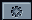
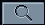

YOUTUBE LIBRARY


Digite para buscar...
0 selecionadas
Limpar
Adicionar à Playlist
Carregando áudio...
CONFIGURAÇÕES
X
Qualidade de Áudio
Formato preferido:
Melhor Qualidade
M4A (AAC)
MP3
Economia de Dados
Interface
Fechar seletor após adicionar à playlist
Mostrar avisos de vídeos bloqueados
Reproduzir automaticamente após adicionar
Reprodução
Limite de resultados:
10 resultados
25 resultados
50 resultados
Sempre usar stream direto (mais lento)
Resetar Configurações